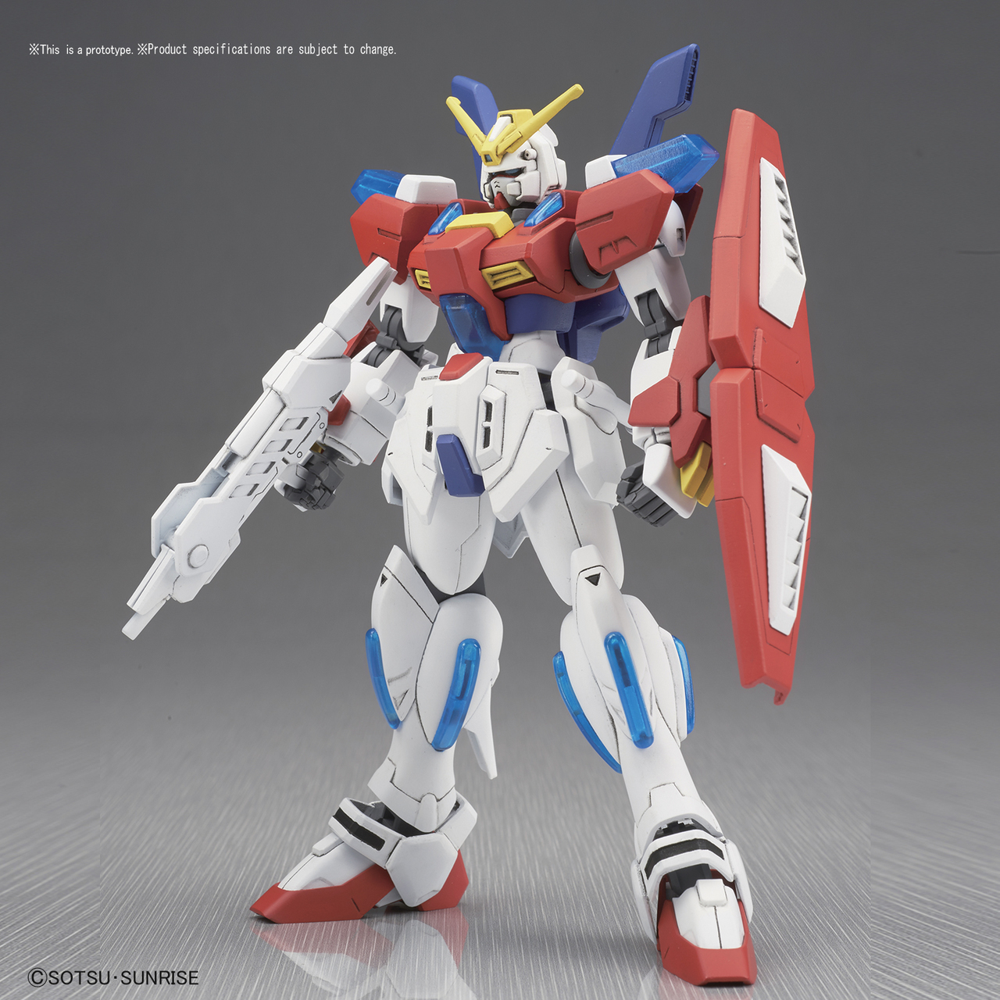

A much improved quality of molding would then be introduced. From 2010 til now; The HG kits would be catergorized by what specific anime they came from.

2015 was one of the most pinnacle years. They released High Grade Build Custom (HGBC), celebrating the release of the newest anime "Gundam Build fighters". This line of HG kits
were the first kits that could actually customize a person's gunpla kit with different gear, body and armor parts from other kits in the same line.
Though they may be much better than HG kits, only a few RG model kits are made every year while many more HG kits are made every year. This is most likely due to the fact that its much harder to make small kits with high levels of detail, when you could make Master Grade or Perfect grade kits with the same, high level of detail, on a larger kit.